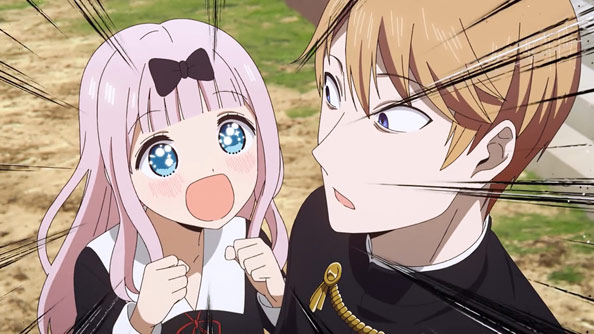

NEWS

 LIVE Chika oficially announced best waifu, scoring higher than Hayasaka Ai
LIVE Chika oficially announced best waifu, scoring higher than Hayasaka Ai
“It’s no fair to have girls’ talk without me! Please leave an issue like that to Love Detective Chika!” – Chika Fujiwara.
Japan
- Kaguya-sama: Love Is War -Ultra Romantic- Coming April 2022
- Kaguya-sama: Love is War -Ultra Romantic- starts streaming April 8, 2022 on Crunchyroll and Funimation!
- Kaguya-sama: Love is War? English Dub Cast Announced!
The student souncil wants to move forward

18h
Asia

Miyuki Shirogane wants to mediate, Kaguya distracts him
14h
Asia
Nagisa Kashiwagi wants to kill, Maki Shijo wants to take action
23h
Asia
Miyuki Shirogane wants to be believed
8h
Asia